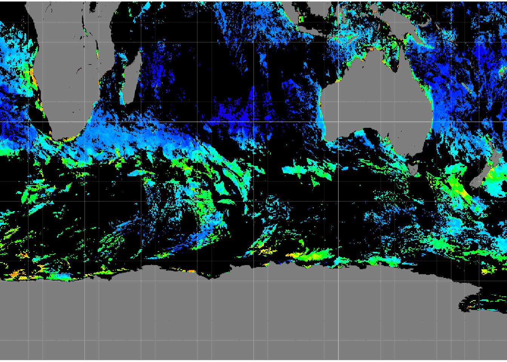

Read in a drawing in simple features for R form.
library(manifoldr)
mapfile <- system.file("extdata", "AreaDrawing.map", package = "manifoldr")
dwg <- Drawing(mapfile, quiet = FALSE)## [1] "choosing first table [Drawing Table] from: "
## [1] "Drawing Table,GEOMETRY_COLUMNS,SPATIAL_REFERENCE_SYSTEMS"
## [1] "PROJCS[\"unnamed\",GEOGCS[\"GCS_WGS_1984\",DATUM[\"D_WGS_1984\", SPHEROID[\"WGS_1984\",6.378137e6,2.9825722356300156e2]],PRIMEM[\"Greenwich\",0.0],UNIT[\"Degree\",0.0174532925199433]],PROJECTION[\"Lambert_Azimuthal_Equal_Area\"],PARAMETER[\"False_Easting\",0],PARAMETER[\"False_Northing\",0],PARAMETER[\"Longitude_Of_Center\",0],PARAMETER[\"Latitude_Of_Center\",0],PARAMETER[\"Scale_Factor\",1],UNIT[\"Meter\",1.0]]"
## [1] "+proj=laea +lat_0=0 +lon_0=0 +x_0=0 +y_0=0 +datum=WGS84 +units=m +no_defs "
## [1] "SELECT * FROM (SELECT [ID],[Name], CGeomWKB(Geom(ID)) AS [geom] FROM [Drawing Table] ) WHERE [geom] IS NOT NULL"Read in a drawing.
library(manifoldr)
library(RODBC)
mapfile <- system.file("extdata", "AreaDrawing.map", package = "manifoldr")
geom2D <- DrawingA(mapfile, "Drawing")
geom2D## class : SpatialPolygonsDataFrame
## features : 6
## extent : -178, 924.5, -52, 202 (xmin, xmax, ymin, ymax)
## coord. ref. : +proj=laea +lat_0=0 +lon_0=0 +x_0=0 +y_0=0 +datum=WGS84 +units=m +no_defs +ellps=WGS84 +towgs84=0,0,0
## variables : 2
## names : ID, Name
## min values : 10, E
## max values : 15, Ogeom1D <- DrawingL(mapfile, "Drawing")
geom1D## class : SpatialLinesDataFrame
## features : 2
## extent : -615.2802, 1334.871, -565.2889, 612.3995 (xmin, xmax, ymin, ymax)
## coord. ref. : +proj=laea +lat_0=0 +lon_0=0 +x_0=0 +y_0=0 +datum=WGS84 +units=m +no_defs +ellps=WGS84 +towgs84=0,0,0
## variables : 2
## names : ID, Name
## min values : 22, Inf
## max values : 24, -Infgeom0D <- DrawingP(mapfile, "Drawing")
geom0D## class : SpatialPointsDataFrame
## features : 23
## extent : -615.2802, 1091.102, -565.2889, 473.103 (xmin, xmax, ymin, ymax)
## coord. ref. : +proj=laea +lat_0=0 +lon_0=0 +x_0=0 +y_0=0 +datum=WGS84 +units=m +no_defs +ellps=WGS84 +towgs84=0,0,0
## variables : 2
## names : ID, Name
## min values : 26,
## max values : 48, OUnfortunately this must be done separately for points lines or areas, for now. Future versions will levarage gris or something like it to read a Drawing in its full state.
Read in a surface.
=======
library(raster)## Loading required package: spmapfile2 <- system.file("extdata", "Montara_20m.map", package= "manifoldr")
gg <- Surface(mapfile2, "Montara")
gg## class : RasterLayer
## dimensions : 698, 558, 389484 (nrow, ncol, ncell)
## resolution : 20, 19.98565 (x, y)
## extent : 544122.5, 555282.5, 4151917, 4165867 (xmin, xmax, ymin, ymax)
## coord. ref. : +proj=tmerc +lat_0=0 +lon_0=-123 +k=1 +x_0=500000 +y_0=0 +datum=NAD27 +to_meter=20 +no_defs +ellps=clrk66 +nadgrids=@conus,@alaska,@ntv2_0.gsb,@ntv1_can.dat
## data source : in memory
## names : layer
## values : -1, 1931 (min, max)Read in an image.
mapfile3 <- system.file("extdata", "V20160202016022.L3m_R3QL_NPP_CHL_chlor_a_9km.map", package= "manifoldr")
im <- Image(mapfile3, "V20160202016022.L3m_R3QL_NPP_CHL_chlor_a_9km")
plotRGB(im)
im## class : RasterBrick
## dimensions : 1081, 2159, 2333879, 3 (nrow, ncol, ncell, nlayers)
## resolution : 0.08333333, 0.08333333 (x, y)
## extent : 0.08332613, 180, -90, 0.08332973 (xmin, xmax, ymin, ymax)
## coord. ref. : +proj=longlat +datum=WGS84 +no_defs +ellps=WGS84 +towgs84=0,0,0
## data source : in memory
## names : layer.1, layer.2, layer.3
## min values : 0, 0, 0
## max values : 255, 255, 255TBD
Open a connection to a built-in .map file and issue a query.
TBD
======= ### Manifold geometry via RODBC
NOTE: there’s no real need for this now, please use higher level functions which do all of this in one step.
We can read from Manifold map files using a bit of SQL and the wkb R package.
## extensions we need
library(wkb) ## for parsing WKB blobs as Spatial R objects
library(sp) ## Spatial R objects
library(RODBC) ## ODBC in R
library(raster) ## just for nice print methods for sp objects
library(manifoldr)
## open a connection to a map file
## original file has Local Scale 0.0001, so I use a modified copy "Provinces_"
con <- odbcConnectManifold("E:\\ManifoldDVD\\Data\\World\\Medium Resolution\\World Provinces.map")
## list the available tables if needed
##sqlTables(con)
## read in just the ID and the Geom (I) as WKB
## (Manifold's Geom includes the CRS so we cast to OGC using CGeomWKB)
## remember this is just a data.frame
ProvincesGeom <- sqlQuery(con, "SELECT [ID], [Country], [Province], CGeomWKB(Geom(ID)) AS [geom] FROM [Provinces_] WHERE [Longitude (I)] > 100 AND [Latitude (I)] < 0")
## get the CRS (somehow)
## . . .
close(con)
## construct an R spatial object from the raw geometry
## this is just SpatialPolygons/Lines/Points (what happens to mixed geom layers?)
Rsp <- readWKB(ProvincesGeom$geom)
## reconstruct our original layer
Countries <- SpatialPolygonsDataFrame(Rsp, subset(ProvincesGeom, select = c("ID", "Country", "Province")))
Countries
plot(Countries)
devtools::session_info()